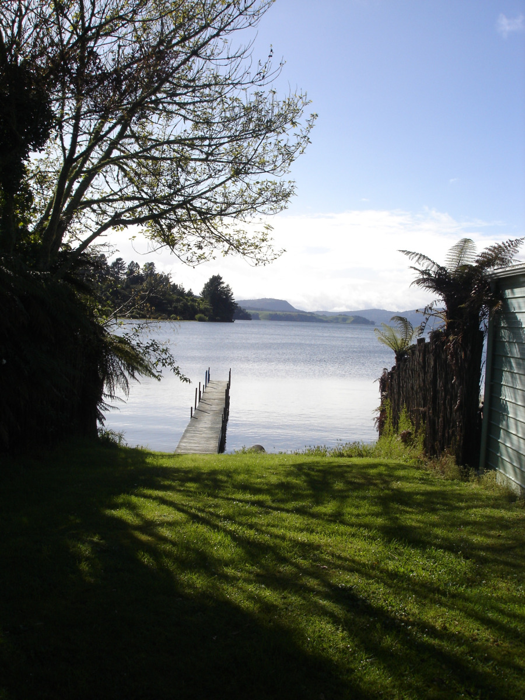

#/media/File:Lake_Rotoiti_NZ7_3514_-_32143651807.jpg){kind=link}
Lake Rotoiti
Lake Rotoiti is a lake in the Bay of Plenty region of New Zealand. It is the
northwesternmost in a chain of lakes formed within the Okataina caldera. The lake is close to the northern
shore of its more famous neighbour, Lake Rotorua, and is connected to it via the Ohau Channel. It drains to
the Kaituna River, which flows into the Bay of Plenty near Maketu.
The full name of the lake is Te Rotoiti-kite-a-Īhenga, which in the Māori language means "The Small
Lake Discovered By Īhenga", the Māori explorer also credited with discovering Lake Rotorua. Legend says that
the lake was named as such because when Ihenga first saw it, he was only able to see a small part of it and
thought the lake was a lot smaller.
Quelle:Wikipedia
View from Jetty on Lake Rotoiti
Since the 1960s, the quality of lake water has been negatively affected by inflows of nitrogen rich water
from Lake Rotorua, agricultural run-off from surrounding farms and seepage from domestic septic tanks. The
effects of this included an almost permanent algal bloom in the Okere arm of the lake and choking lake weed
growth in other still areas of the lake. A barrier to divert the nutrient rich waters of Lake Rotorua into
the Kaituna River was completed in late 2008.
The Bay of Plenty Regional Council expected to see improvement in lake water quality within five years and
the Rotorua Te Arawa Lakes Program reported in 2013 that the intervention has significantly improved water
quality. Water quality is the highest it has been in decades, on track to meet targets set by the Program to
meet community expectations.
Lake Rotoiti has thermal hot-spring baths on the southern shore which are accessible by boat.
(Quelle: Wikipedia)
Overview Map
Links
- Activities
- Tripadvisor
- Bachcare
- Eventfinda